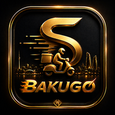

Hesabın və məlumatların silinməsi — BakuGo Kuryer
Bu səhifə BakuGo Kuryer tətbiqinin (tərtibatçı: BakuGo) istifadəçilərinin hesablarını və onlarla bağlı məlumatları necə silə biləcəyini izah edir.
1. Tətbiqin içindən (dərhal)
- BakuGo Kuryer tətbiqini açın və hesabınıza daxil olun.
- Yuxarı sol küncdəki 👤 Hesab düyməsinə toxunun.
- Siyahının sonunda 🗑️ Hesabı sil bölməsini seçin.
- Şifrənizi daxil edib "Hesabı həmişəlik sil" düyməsinə toxunun.
2. Tətbiqə daxil ola bilmirsinizsə
Qeydiyyatdan keçdiyiniz e-poçt ünvanından seymur048ibrahimov@gmail.com ünvanına "BakuGo Kuryer — Hesabın silinməsi" mövzusu ilə məktub göndərin və ya WhatsApp vasitəsilə yazın: +994 70 248 48 52.
Məktubda hesabın e-poçt ünvanını və telefon nömrəsini qeyd edin. Sorğu kimliyiniz təsdiqləndikdən sonra 30 gün ərzində icra olunur.
3. Hansı məlumatlar silinir
- Hesab (giriş e-poçtu və şifrə)
- Profil məlumatları: ad, soyad, telefon nömrəsi
- Saxlanılmış kartın son 4 rəqəmi və kart sahibinin adı
- Son lokasiya koordinatları, bildiriş tokeni və cihaz identifikatoru
4. Hansı məlumatlar saxlanıla bilər
- Tamamlanmış sifarişlər və ödəniş/çıxarış qeydləri — qanunla tələb olunan maliyyə hesabatlığı üçün, şəxsiyyəti göstərməyən (anonimləşdirilmiş) formada, qanunun tələb etdiyi müddət ərzində.
- Qaydaları pozduğu üçün bloklanmış hesablara aid blok qeydi (cihaz identifikatoru və telefon nömrəsi) — saxtakarlığın qarşısını almaq məqsədilə.
© 2026 BakuGo · Gizlilik siyasəti · Hesabın silinməsi